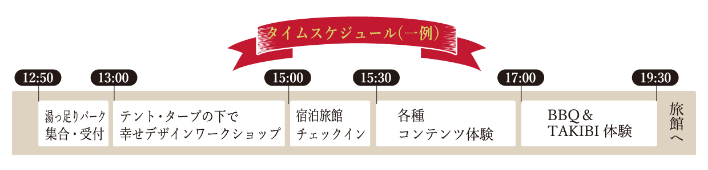

里山里海の世界農業遺産に認定された能登半島和倉温泉で「幸せ」をデザインする企業研修ワーケーション
石川県／七尾市
「幸せデザインワークショップ＋ネイチャーアウトドア体験」とは
人的資本の充実が重要視される中で、個人や企業の幸せとは何かを考え、デザインをするためのワークショップです。新入社員から経営層まで、社内のすべての方が対象となる研修プログラムです。非日常的で開放的な空間で実施することにより「自然と人」「人と人」がつながることをより体感できる効果があります。
意識改革/チームビルディング
若手/中堅/経営層・管理職
通年
研修プログラム詳細
幸せについて考えるワーケーション
能登の里山里海で、自然や潮風を感じながら、自分や会社について考えたり、お互いのコミュニケーションをはぐくんだり、焚火やBBQ、地元ならではのアクティビティに挑戦する中で、自然と幸せを感じることができる、そんなリラックスしたワーケーションプログラムです。
幸せデザインワークショップ開催
幸せデザインサーベイの結果を元に、会社について対話をします。幸せな会社になるためにどんなことに取り組むと良いか、自分事で考えられるワークショップです。
みんなでHAPPY DESIGN MAPを作ります。
・ワーケーションモデルプラン
商工中金が実施する幸せデザインワークショップをアウトドア、タープの中で実施いたします。そのあとはレザークラフト、イイダコ釣りなどのアクティビティーと夕食BBQをご用意しています。午後から夜までのプログラムですので、翌日に座禅やヨット体験などのアクティビティを追加したり、自社研修プログラムの一部としても活用していただけます。
スケジュールやアクティビティはカスタマイズが可能です、コーディネーターにご相談ください。
・アクティビティ
ワークショップに加えて、和倉温泉を体感できる様々なアクティビティをご用意可能です（別途オプション料金が必要です）。
坐禅・写経体験はこちらで！
青林寺
和倉温泉街のほど近くに建つ青林寺は明治25年に開創された曹洞宗の寺院です。明治42年東宮殿下（後の大正天皇）が和倉行啓の際に休憩所として建てられた御便(ごべん)殿(でん)が昭和51年に移築し保存されており、平成29年には国登録有形文化財に登録されました。青林寺客殿は「映えスポット」として人気の観光スポットです。
この研修プログラムで学べること、得られること
幸せデザインワークショップ ー企業の成長は“幸せ”が起動するー
幸せの可能性をご存知ですか？
世界中の様々な研究から、幸福度の高い人ほど、創造性や生産性が高いことが確認されています。
さらに、独自の調査により、幸せと企業の成長に関係があることがわかってきました。
幸せデザインワークショップではで会社の幸せを可視化し、一緒に幸せな会社を創るためのヒントを得るためのワークショップです。
自然豊かな能登半島、アウトドアの開放的な空間で実施することで、より高い効果が得られます。
ウェルビーイング・マインドフルネス
和倉温泉スパキャンはウェルビーイングやマインドフルネスといった、心と体の健康を促すためのワーケーションプログラムです。
上記モデルプランやオプションの組み合わせることにより、リフレッシュ効果やリラクゼーション効果を得ることができます。
従業員だけでなく、ご家族も一緒に参加できるプログラムです。
宿泊先
- ・日本の宿 のと楽
- ・宿守屋寿苑
- ・ホテル海望
- ・多田屋
- ・天空の宿 大観荘
能登半島和倉温泉について
能登半島和倉温泉は、石川県七尾市にある温泉地で、開湯1200年とされる歴史の古い温泉です。
北陸随一の“海の温泉”として、高温で豊富な湯量が魅力です。泉質はナトリウム・カルシウムー塩化物泉で、“海の温泉”ならではの豊富な塩分が特長です。美肌や神経痛、疲労回復などに効果があるとされており、温泉での入浴後は海風を感じながらの散歩や釣りなども楽しめます。また、四季折々の食材も豊富で、新鮮な魚介類や里山里海で育った能登野菜など地元の食材を使った料理が楽しめます。
海の景色を眺められる場所での研修やミーティングは仲間との交流や親睦も深まりやすく、おしゃれなテント・タープの下でいつもとは違う体験ができます。
さらにオプションで能登ならではのコンテンツ体験ができますし、なにより温泉旅館の宿泊付きというのが一番の魅力ポイントです。
ご参加いただいた方からは、「テント内のミーティングも話題が豊富になりよかった。焚き火に集まるとさらに話が弾んだ気がする。」や「キャンプで宿泊することは難易度が高く感じるが、温泉施設に宿泊できるので、参加しやすい仕組みになっていると感じた。」などといった嬉しい感想をいただきました。
少しでもご興味のある方は、まずはお気軽にお問い合わせください。
和倉温泉旅館協同組合 ／ 干場順子
- プログラム名：和倉温泉スパキャン
- 参加条件：8名以上
- ツアー日程：3月~11月（冬季は開催なし）
- プログラム料金：お問い合わせください。
主催・事務局情報
- 和倉温泉旅館協同組合（わくたまトラベル）